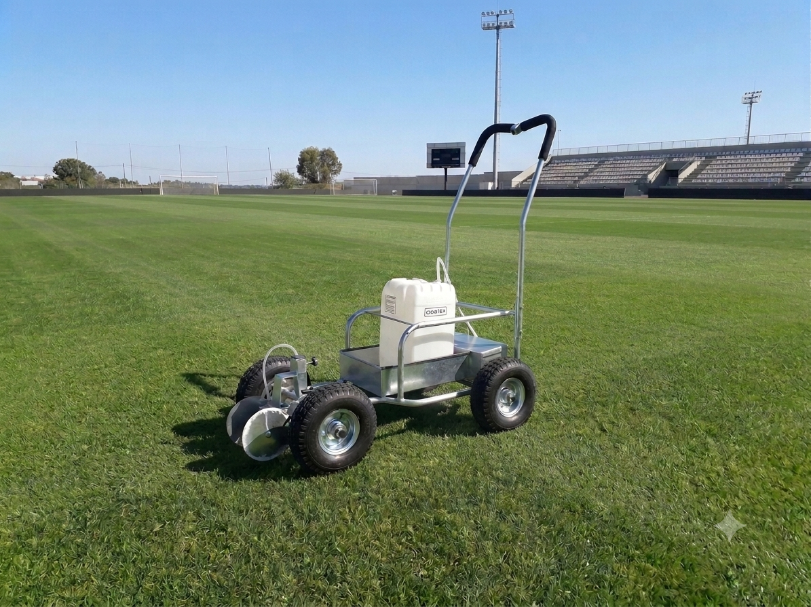
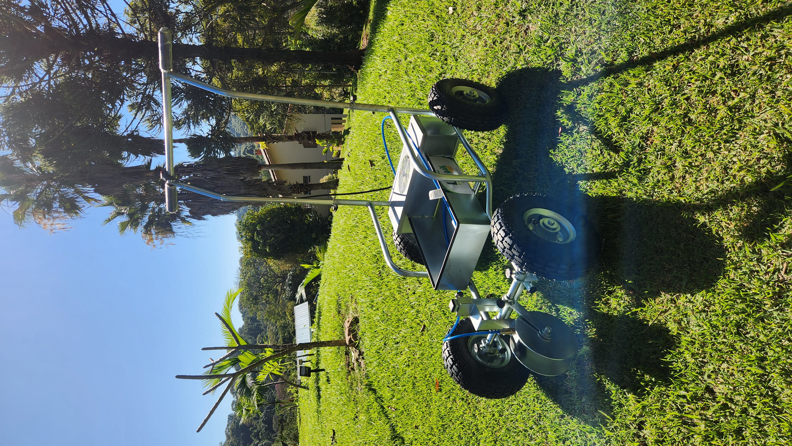
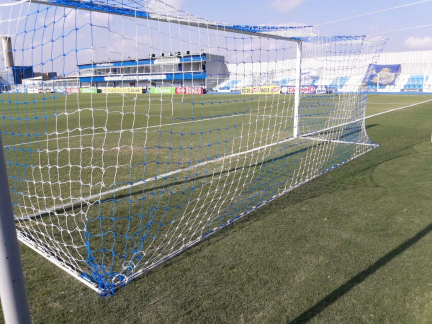
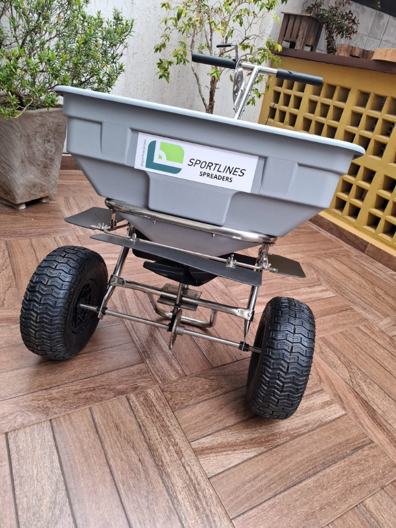
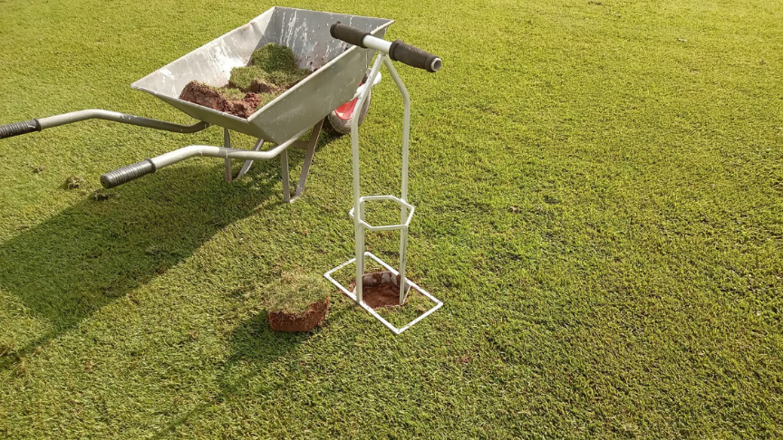
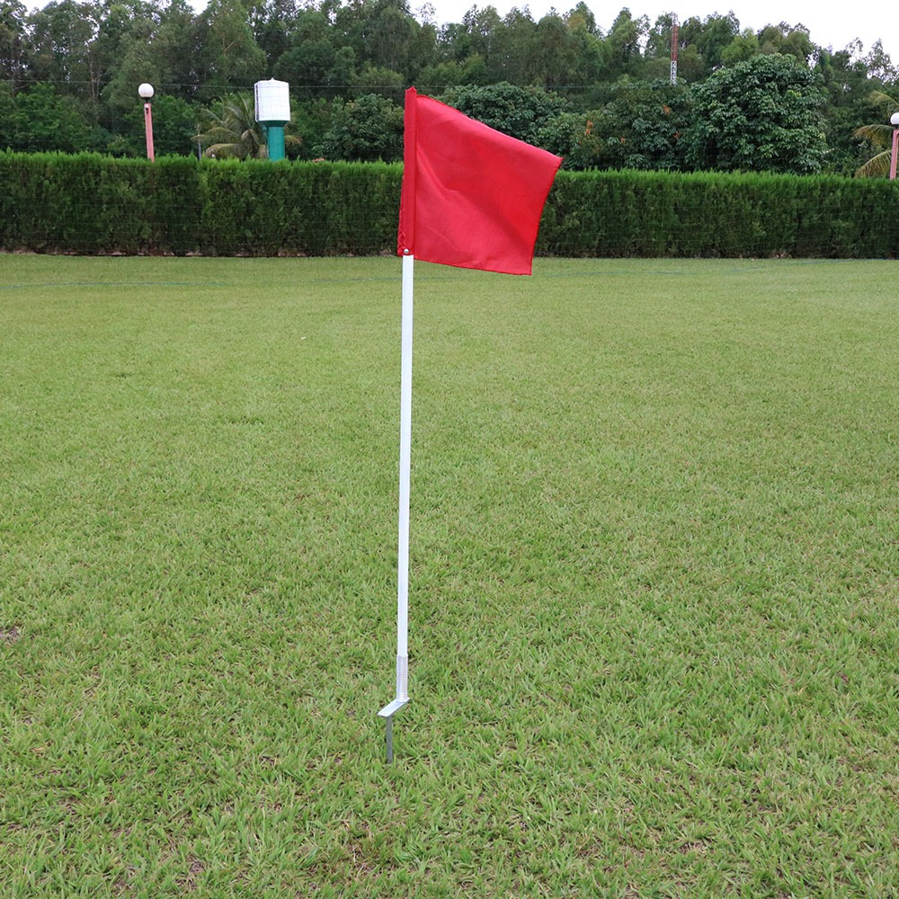
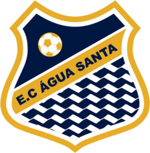

Com sistema Plug & Spray e bateria de longa duração, o Marcador Elétrico Sportlines garante marcação profissional em minutos e com baixo consumo de insumos.
Ver Vantagens e Preço

O Marcador de Campo Sportlines é uma solução para marcação das linhas de jogo nos Campos de Futebol, Rugby, Tênis e diversas outras modalidades.
Esta opção apresenta um sistema "plug and spray " para conexão rápida e fácil de tintas. Leve e de tamanho compacto, o Marcador de Linhas Sportlines produz uma linha consistente e de alta qualidade.
A máquina tem uma bateria recarregável de longa duração e válvula pulverizadora de tinta, com mecanismo de disco ascensor para facilitar a sua utilização.
Bateria 12V recarregável de longa duração.
Fabricada em tubos de aço galvanizado.
Pneus com câmara e rolamento.
Compartimento para tanque de até 20L.
Bicos aspersores com regulagem de saída de tinta.
Regulador do mecanismo de discos de marcação de 5 á 20 cm.
Baixo consumo de tinta.
Equipamento de fácil uso para trabalhar.
Nosso marcador produz uma linha consistente e de alta qualidade pelo melhor preço do mercado.
Solicitar Orçamento
Rede com fio de alta densidade e proteção UV. Resistente a impactos e variações climáticas. Padrão oficial.
Solicitar Orçamento
Distribuidor de alta precisão para fertilizantes, sementes e areia. Garante cobertura uniforme e preservação do gramado.
Solicitar Orçamento
Ferramenta manual de alta resistência para remoção e substituição precisa de plugues de grama em reparos rápidos do campo.
Solicitar Orçamento
Jogo completo com hastes flexíveis e bandeiras em tecido náilon resistente. Sistema de mola na base para absorção de impactos.
Solicitar Orçamento